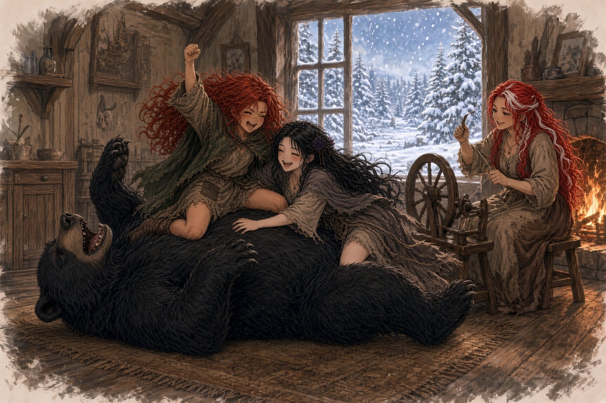

There once was a woman who lived alone with her two daughters at the edge of a dark wood. The villagers called her a widow, and she let them. Her cottage had two rosebushes growing on either side of the door, one that bore white roses and one that bore red, and she loved those bushes so much that she named her girls after them.
Rose Red was the loud one. She had scabs on both knees and a gap in her front teeth where a tree had won an argument, and she went right on climbing everything there was to climb anyway. She fought the miller's boys for the pure joy of it and came home with her braids undone and her fists still balled up, grinning like somebody had given her a present.
Snow White was the quiet one. Her hair was black as a crow's wing and her skin was so pale you could see the veins showing blue at her wrists. She wore a black ribbon every single day, kept pressed moths in her prayer book, and liked the graveyard much better than the village, because nobody there talked over anybody else. She had been born with a weak heart. When she laughed too hard, or cried, or got frightened, it would stumble around in her chest like a foal on ice, and her lips would go gray as old candle wax.
"Gently, Snow," her mother would say, and press a cool palm flat against her chest. "Gently."
So Snow learned gentle. Whenever something hurt she would fold it up small and put it away, the way her mother folded the good linens for the cupboard. She found that if she was very still, and very quiet, and waited long enough, most things passed on their own.
Rose never learned gentle. She never had to. She had Snow to be gentle for the both of them, and Snow had Rose to be everything else.
One winter night, in the deep of the cold, something knocked on the door.
Snow froze on her stool. Rose grabbed the fire poker and yanked the door open before anyone could tell her not to, and there on the step stood a great black bear with snow crusted all through his fur.
"Don't be afraid," said the bear. "I'm only half frozen. I only want to warm myself a while."
Rose lowered the poker by about an inch, which for Rose was a great courtesy. Their mother stood up from her spinning wheel and looked at the bear for a long time. Her hands had gone very still on the wool.
"Come in," she said quietly. "Lie down by the fire."
He came every night after that. Rose wrestled him on the hearth rug and pulled his ears and rode around on his back while he grunted and groaned and pretended to be beaten. Snow sat by his big head and picked the ice out of his fur one little knot at a time, and the bear held perfectly still for her the whole while. Sometimes she rested her ear against his side and listened to his heart, slow and huge and steady, and her own heart would slow down to match it. It was the best she had ever felt.
When the girls got too rough he would groan, "Snow White, Rose Red, will you beat your poor old bear dead?" and Rose would laugh until she fell over.
Their mother set out honey for him every evening, though she never ate honey herself. Neither girl ever thought to ask about that.
When spring came the bear said he had to go. "There are thieves in the wood," he said, "who dig up what's been buried, and I have to guard what's mine." As he squeezed out through the door, the latch caught in his fur and tore a patch of it loose, and for just a moment Snow thought she saw something glint underneath, like gold. Then he was gone into the trees, and she decided she must have imagined it.
That spring the girls went out gathering in the wood, and they came upon a little man hopping up and down beside a fallen tree. His long beard was caught fast in a split in the trunk, and he was yanking at it and ticking, very faintly, like a pocket watch.
"Don't just stand there gawking, you goose-brained, milk-faced creatures!" he shrieked. "Help me!"
Rose crossed her arms. "Say please."
"I don't say please. I'm very careful about what I say. Do you know what happens to a dwarf who goes around saying things?"
"No," said Snow.
"Nothing good." The ticking sped up. "Now get me loose."
Rose looked at Snow. Snow looked at the little man, red in the face and sweating and ticking away like he might break a spring. She took the sewing scissors out of her apron pocket and snipped off the end of his beard.
The dwarf did not thank her. He snatched a sack of gold out of the roots of the tree, hugged it to his chest, and stomped off muttering about rude children and good beards ruined forever.
"We should've left him," said Rose.
"He was frightened," said Snow.
The second time, they found him down at the stream with his beard all tangled up in his own fishing line and a great fat fish dragging him toward the water. Rose stood on the bank with her hands on her hips and watched his boots skid through the mud and did nothing at all.
"Rose," said Snow.
"He's a nasty little man."
"Rose."
Rose sighed hard through her nose and grabbed him by the collar while Snow cut the line. The dwarf hauled a sack of pearls out from under the bank and called them both clumsy toads for their trouble.
"Why do you even need all that?" Rose demanded.
The dwarf's ticking stuttered. For a moment his whole face crumpled up like paper.
"I said," he whispered. "I said to my brothers, there were eight of us, I said I could make a better living on my own. I said it." He clutched the pearls tighter. "Do you know what it is to have said something? It isn't finished until it's true. It's never finished." Then he remembered himself, spat on Rose's shoe, and ran.
The third time, an eagle had him by the coat and was lifting him off the ground. Rose grabbed one boot and Snow grabbed the other, and they hauled and hauled until the eagle gave up and let go, and all three of them went tumbling down into the heather. The dwarf scrambled up, shrieked that they'd torn his good coat, dug a sack of jewels out from under a rock, and turned to run.
That was when the bear came out of the trees.
The dwarf saw him and screamed. He threw down the sack and fell flat on his knees.
"Spare me, spare me! What use am I to you? Look at me, I'm all gristle! Take these two instead, they're young and fat and tender, eat them!"
The bear hit him once with his paw.
The dwarf went flying and landed in a heap, and his ticking went all ragged, tk-tk, tk, tk-tk. Rose felt something hot and wonderful rise up through her whole body, from her feet all the way to her teeth.
"Finish him!" she yelled. "Finish him!"
Snow had both hands pressed to her chest. Her heart was doing the foal-on-ice thing, worse than it had ever done it before, and the edges of the world were starting to go gray.
The dwarf raised one shaking hand.
"Wait," he gasped. "Wait. You're under a spell. Spells come off." He coughed, and he picked every word after that carefully, like a man crossing ice. "Spare my life, and I will change you back. That's my word. And you know what a dwarf's word is."
The bear stood over him, breathing hard, and his claws dug deep into the earth.
"Who," the bear growled. "Who did this to me?"
The dwarf's ticking slowed down to something careful and even. He smiled with blood on his teeth, and he said nothing at all.
The bear looked at the dwarf. He looked at the girls. He looked at Snow, who was swaying on her feet.
He stepped back.
The dwarf crawled up onto his knees. From inside his coat he drew out a sliver of glass, silver and cold, and held it up so the light ran down it like water. The bear shuddered all over. His fur slid off of him like a cloak falling from a man's shoulders, and there in its place stood a tall man in a coat of gold thread, with Snow's black hair and Rose's stubborn jaw.
The dwarf was already running. He tucked the glass back into his coat and didn't even stop for his sack of jewels, and he was laughing as he went, high and ticking, off into the trees.
Rose snatched up a rock and threw it with everything she had in her. It missed.
She grabbed another one. The man caught her wrist, gently.
"Let him go," he said.
"He'll do it again," said Rose, and her voice cracked right down the middle. "He'll do it to somebody else. You let him."
"I know," said the man. He knelt down and looked her in the eyes for a long time, and he did not tell her she was wrong. "I needed what he had."
Rose kept the rock. She carried it in her pocket for the rest of her life.
Snow didn't see any of it. Her heart had stopped stumbling and had simply stopped, just for a moment, and she had gone down in the heather like a dropped glove.
When she opened her eyes again the bear was gone. A man she didn't know, and knew completely, was holding her against his chest, and she could hear his heart: slow and huge and steady, the very same heart she had listened to all winter long. The thief was gone. The sky was blue. Her mother was running across the meadow with her skirts bunched up in her fists, crying out their father's name.
Everything terrible had happened while Snow wasn't there to feel it. All she'd had to do was hold still until it passed.
She remembered that.